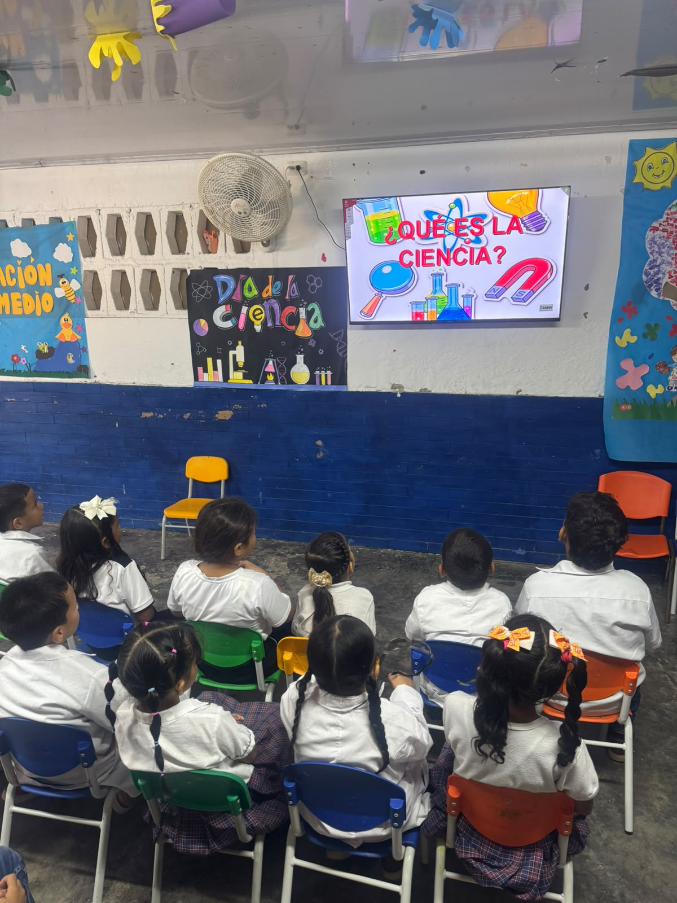

GFM · 01
Mesa Experimental
GFM · 01
Mesa Experimental
Pequeños Científicos en su Mesa Experimental
Tres estudiantes carmelitas con batas blancas y gafas de laboratorio junto a la balanza, recipientes y reactivos frente al mural decorativo «Jugando Ando Experimentando».
«Nuestra Ciénaga también tiene futuro» · Cobertura audiovisual integral (19 Videos Oficiales: 11 Horizontales + 8 Shorts) y muestra fotográfica institucional (49 Fotografías en Alta Definición): ponencias científicas del Foro con respaldo de GEF-7 e INVEMAR, mesas de bioeconomía con Unicaribe, semillero infantil de arte ecológico y la jornada científica paralela en la Sede Guillermo F. Morán.
Revive los momentos más emotivos del Foro Institucional «Salvemos la Ciénaga»: palabras de apertura, actos protocolarios, ponencias científicas sobre biodiversidad, mesas de bioeconomía con Unicaribe, el semillero infantil de arte y las cápsulas verticales en Shorts.
Estudiante carmelita inaugurando la jornada académica con micrófono en atril y presentación en pantalla digital junto a las banderas institucionales.
Sustentación académica con diapositiva ilustrada detallando especies clave de la Ciénaga Grande: lisa, mojarra lora y sábalo.
Disertación estudiantil analizando la calidad de las fuentes hídricas tributarias, el flujo ecológico y los desafíos de conservación del humedal.
Cuatro alumnas de bachillerato sustentando ante la comunidad su cartelera de propuestas para vincular universidades y centros de investigación.
Docentes y delegación estudiantil coordinando las intervenciones y el desarrollo protocolario institucional frente al patio central.
Exposición grupal de estudiantes de secundaria sustentando estrategias para evitar la sobreexplotación y promover la pesca responsable.
Estudiantes carmelitas sustentando en equipo conclusiones y compromisos ciudadanos para el cuidado y restauración de los manglares.
Sustentación comunitaria con mapa ecológico ilustrado: llamado a no quemar mangle, no arrojar plásticos y proteger la fauna silvestre.
Docente y estudiantes exponiendo pliego de estrategias sobre comités de veeduría, estudios científicos del agua y reciclaje integral.
Lectura de acuerdos ambientales y reflexiones en atril por estudiantes de grado superior para la preservación de nuestro patrimonio hídrico.
Exposición grupal de cartel ilustrado y lectura de compromisos asumidos por los estudiantes para fomentar la educación ecológica comunitaria.
Cápsula ágil del auditorio estudiantil reunido y atento al desarrollo de las ponencias del Foro Salvemos la Ciénaga.
▶ Abrir Short ↗Intervención de estudiante carmelita analizando gráficos, datos y estadísticas sobre el impacto ambiental en la Ciénaga.
▶ Abrir Short ↗Mensaje de sensibilización expresado con convicción desde el atril por una estudiante líder en defensa de los recursos naturales.
▶ Abrir Short ↗Vista panorámica vertical del patio cubierto durante los actos protocolarios y bienvenida general al Gran Foro 2026.
▶ Abrir Short ↗En simultánea con las ponencias del Gran Foro «Salvemos la Ciénaga», los estudiantes de preescolar y básica primaria de la Sede Guillermo F. Morán celebraron el Día de la Ciencia con batas blancas, gafas protectoras, balanzas, lupas y experimentos prácticos. Descubrieron el método científico a través del asombro, la observación guiada y el juego pedagógico.
GFM · 01
Mesa Experimental
Tres estudiantes carmelitas con batas blancas y gafas de laboratorio junto a la balanza, recipientes y reactivos frente al mural decorativo «Jugando Ando Experimentando».

GFM · 02 Exploración del MedioAlumnos de primaria en sillitas ergonómicas atentos a la presentación educativa en pantalla y cartelera interactiva sobre el método científico y los fenómenos de la naturaleza.
 GFM · 03
Semillero Infantil
GFM · 03
Semillero Infantil
Perspectiva complementaria del aula en plena jornada de demostración, preguntas e intercambio de conocimientos guiado por el equipo docente de la sede.
Muestra del dinamismo de los pequeños investigadores Carmelistas con sus experimentos de laboratorio.
▶ Abrir Short en YouTube ↗Dinámica de observación, hipótesis guiadas y entusiasmo de los alumnos descubriendo la ciencia cotidiana.
▶ Abrir Short en YouTube ↗Registro del ambiente festivo del semillero infantil carmelita en su gran jornada científica paralela.
▶ Abrir Short en YouTube ↗Prácticas de laboratorio y entusiasmo de los estudiantes de la Sede Guillermo F. Morán en su fiesta del saber.
▶ Abrir Short en YouTube ↗Una selección de 46 postales exclusivas del Foro «Salvemos la Ciénaga»: ambientación, diálogo comunitario, arte infantil, ponencias científicas y mesas de bioeconomía. Haz clic sobre cualquier fotografía para abrir el visor en pantalla completa con navegación por teclado.
.jpg) 1 / 46
Organización & Protocolo
1 / 46
Organización & Protocolo
Estudiantes en la mesa de bienvenida junto al mural institucional: «Salvemos la Ciénaga con Pequeñas Acciones - Reciclemos».
.jpg) 2 / 46
Apertura Oficial
2 / 46
Apertura Oficial
Intervención protocolaria con micrófono desde el atril de madera tallada, junto a las banderas de Colombia y Ciénaga.
.jpg) 3 / 46
Escenario Central
3 / 46
Escenario Central
Vista desde el auditorio hacia el atril, las banderas y la pantalla de transmisión con el afiche oficial del Foro.
.jpg) 4 / 46
Comunidad Docente
4 / 46
Comunidad Docente
Directivas de la institución, docentes y facilitadores invitados reunidos en el patio escolar durante la jornada académica.
.jpg) 5 / 46
Mesas de Trabajo
5 / 46
Mesas de Trabajo
Estudiantes de bachillerato redactando en papelógrafo las propuestas de innovación tecnológica y educación ambiental.
.jpg) 6 / 46
Promo 2026 & Docentes
6 / 46
Promo 2026 & Docentes
Docente y estudiantes de último grado concertando estrategias ecológicas y compromisos ciudadanos en mesa redonda.
.jpg) 7 / 46
Acompañamiento Docente
7 / 46
Acompañamiento Docente
Docente orientador guiando la reflexión de estudiantes de secundaria sobre los retos ambientales de la región.
.jpg) 8 / 46
Semillero Infantil
8 / 46
Semillero Infantil
Niña y niño de primaria exhibiendo sus obras en díptico comparando la Ciénaga que sueñan frente al estado actual.
.jpg) 9 / 46
Taller de Pintura
9 / 46
Taller de Pintura
Estudiante de primaria concentrado pintando los manglares y el agua de la Ciénaga con pincel en su pupitre.
.jpg) 10 / 46
Docentes de Primaria
10 / 46
Docentes de Primaria
Docentes sonrientes supervisando las actividades pedagógicas y artísticas de los niños en el aula de clases.
.jpg) 11 / 46
Arte & Expresión
11 / 46
Arte & Expresión
Niñas de primaria combinando colores en paletas plásticas para dar vida a sus dibujos sobre la naturaleza carmelita.
.jpg) 12 / 46
Sueños por la Ciénaga
12 / 46
Sueños por la Ciénaga
Alumna de primaria mostrando su dibujo desplegable con sol radiante, aves y cerros verdes sobre aguas limpias.
.jpg) 13 / 46
Taller de Arte
13 / 46
Taller de Arte
Estudiantes de primaria aplicando témpera con dedicación sobre cartulinas en la jornada artística ambiental.
.jpg) 14 / 46
Guardianes del Mangle
14 / 46
Guardianes del Mangle
Niño de primaria sosteniendo con orgullo su pintura de un árbol de mangle con raíces firmes bajo el sol.
.jpg) 15 / 46
Aulas en Acción
15 / 46
Aulas en Acción
Vista general del salón con los niños trabajando activamente en sus pupitres azules durante el taller de pintura.
.jpg) 16 / 46
Talento Carmelita
16 / 46
Talento Carmelita
Primer plano de una estudiante dando los toques finales a su creación artística en favor de los ecosistemas locales.
.jpg) 17 / 46
Conciencia Infantil
17 / 46
Conciencia Infantil
Estudiante de primaria dividiendo su hoja para plasmar el contraste entre un humedal limpio y uno afectado por residuos.
.jpg) 18 / 46
Pedagogía & Cuidado
18 / 46
Pedagogía & Cuidado
Docentes organizando témperas, pinceles y paletas de mezcla para apoyar la creatividad de los pequeños.
.jpg) 19 / 46
Diálogo en Aula
19 / 46
Diálogo en Aula
Estudiantes sentados en círculo en el aula mientras la docente orienta la reflexión sobre la protección del entorno.
.jpg) 20 / 46
Mensaje Ecológico
20 / 46
Mensaje Ecológico
Estudiante de primaria exhibiendo su cartel comparativo entre un ecosistema floreciente y la realidad amenazada por basuras.
.jpg) 21 / 46
Voz de la Infancia
21 / 46
Voz de la Infancia
Dos estudiantes de primaria exponiendo sus dibujos con micrófono frente al telón «Salvemos la Ciénaga con Pequeñas Acciones».
.jpg) 22 / 46
Pedagogía Ambiental
22 / 46
Pedagogía Ambiental
Docente con micrófono motivando a los jóvenes junto al atril y el mural con los principios ecológicos de las 3R.
.jpg) 23 / 46
Cartografía Social
23 / 46
Cartografía Social
Estudiantes sustentando cartel ilustrado con compromisos: reducir la quema de mangle, reutilizar plásticos y cuidar la fauna.
.jpg) 24 / 46
Mesas de Trabajo
24 / 46
Mesas de Trabajo
Grupo de bachillerato exponiendo propuestas para sembrar manglares, no arrojar químicos al agua y educar a la comunidad.
.jpg) 25 / 46
Pesca Sostenible
25 / 46
Pesca Sostenible
Sustentación con micrófono sobre la pesca sostenible, tallas mínimas y protección de hábitats acuáticos en la región.
.jpg) 26 / 46
Bioeconomía
26 / 46
Bioeconomía
Estudiantes y docente de apoyo socializando alternativas productivas respetuosas con los recursos naturales de la Ciénaga.
.jpg) 27 / 46
Ciencia & Educación
27 / 46
Ciencia & Educación
Alumnas de bachillerato exponiendo cómo las universidades pueden transferir datos verificables para solucionar problemas locales.
.jpg) 28 / 46
Concertación Juvenil
28 / 46
Concertación Juvenil
Estudiante leyendo el pliego de acuerdos y propuestas articuladas entre instituciones educativas y comunidades.
.jpg) 29 / 46
Gestión Hídrica
29 / 46
Gestión Hídrica
Sustentación con micrófono de propuestas sobre comités de veedores, monitoreo científico del agua y reciclaje integral.
.jpg) 30 / 46
Panorámica General
30 / 46
Panorámica General
Vista general del patio central cubierto colmado de estudiantes, directivos y docentes participando en el Foro 2026.
.jpg) 31 / 46
Ciencia & Alianzas
31 / 46
Ciencia & Alianzas
Expositor en atril presentando en pantalla digital el impacto institucional y la validación científica internacional.
.jpg) 32 / 46
Ponencias Juveniles
32 / 46
Ponencias Juveniles
Estudiante en atril exponiendo datos sobre la Reserva de la Biosfera, el sustento pesquero y el equilibrio climático.
.jpg) 33 / 46
Investigación Juvenil
33 / 46
Investigación Juvenil
Exposición sobre las 528.600 hectáreas del complejo lagunar como captador de CO2 frente a la expansión agrícola e infraestructura.
.jpg) 34 / 46
Biología & Comunidad
34 / 46
Biología & Comunidad
Alumna explicando el estudio biológico en peces (lisa, mojarra) y talleres participativos en Buenavista, Nueva Venecia y Tasajera.
.jpg) 35 / 46
Carbono Azul
35 / 46
Carbono Azul
Disertación en atril explicando la tasa anual de secuestro de carbono de los bosques de manglar y su valor de mitigación climática.
.jpg) 36 / 46
Modelación Científica
36 / 46
Modelación Científica
Alumna exponiendo el modelo computacional 3D de flujo y comportamiento hídrico de los caños hacia la Ciénaga Grande.
.jpg) 37 / 46
Liderazgo Carmelita
37 / 46
Liderazgo Carmelita
Jóvenes expositores reunidos en la mesa principal con arreglo floral bajo los lemas: «¡Salvemos los Mangles!» y «Actúa con Compromiso».
.jpg) 38 / 46
Voz Directiva
38 / 46
Voz Directiva
Docente directivo dirigiéndose a la comunidad educativa para destacar el sentido de pertenencia por el territorio caribeño.
.jpg) 39 / 46
Comunidad & Familia
39 / 46
Comunidad & Familia
Docente facilitadora y madres de familia debatiendo con estudiantes propuestas ambientales para aplicar desde el hogar.
.jpg) 40 / 46
Trabajo en Equipo
40 / 46
Trabajo en Equipo
Estudiantes organizados en mesas de trabajo revisando las preguntas orientadoras y construyendo consensos.
.jpg) 41 / 46
Formación Ciudadana
41 / 46
Formación Ciudadana
Docentes acompañando mesa de diálogo juvenil frente al mural escolar, fomentando la argumentación y la participación.
.jpg) 42 / 46
Bioeconomía Práctica
42 / 46
Bioeconomía Práctica
Estudiantes, acudiente y facilitador universitario debatiendo cómo generar ingresos sin degradar los recursos naturales.
.jpg) 43 / 46
Tutoría Docente
43 / 46
Tutoría Docente
Docente supervisando la redacción de propuestas de los estudiantes en papel kraft sobre el cuidado del medio ambiente.
.jpg) 44 / 46
Mesas Simultáneas
44 / 46
Mesas Simultáneas
Múltiples mesas redondas funcionando en simultáneo en el patio central con estudiantes de la Promo 2026 y bachillerato.
.jpg) 45 / 46
Asesoría Pedagógica
45 / 46
Asesoría Pedagógica
Docentes orientadores guiando a estudiantes en la estructura lógica de sus proyectos de conservación escolar.
.jpg) 46 / 46
Consolidación Final
46 / 46
Consolidación Final
Docente y estudiantes dando cierre a la mesa redonda con la firma y redacción final de compromisos por la Ciénaga.